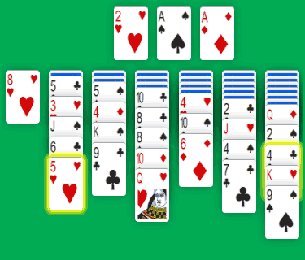
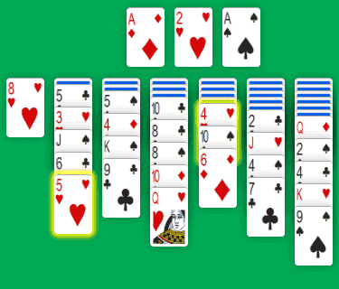

This month, I released a “simple” variant of Yukon Solitaire. Russian Solitaire is just another solitaire card game which is very similar in layout and gameplay to it. Once you know how to play Yukon Solitaire, the only variation is a different Tableau building rule.
With Yukon Solitaire, you can move cards from one Tableau stack to another, provided that the starting and the target cards are built:

So, with the Yukon rule, you can move the 4 of Spades in the last column to the red 5 in the second stack.
The Russian Solitaire rule says that the Tableau cards can only be built on cards:

In this Russian Solitaire Tableau, you can't move a black 4 on top of the 5 of Hearts in the second pile. But you can move the 4 of Hearts from the column 5 to the 5 of Hearts!
This slight variation in building Tableau make the game more difficult to win. With Yukon, you can win about 1 in 10 games. With Russian Solitaire, you should expect around 1 in 30 games...
Therefore, Russian Solitaire is an interesting variation to Yukon and Klondike Solitaire. It needs a lot more attention and strategy to succeed. But it's more rewarding each time you win a game.
And if you want to win, you just have to play Russian Solitaire...
Michel (2018/04/24)